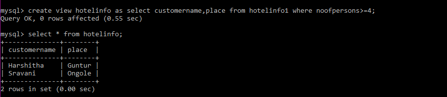
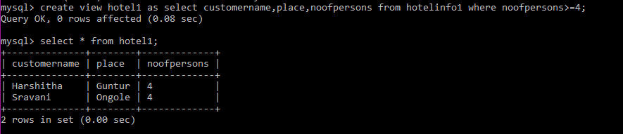

VIEWS
-
View is a data object which does not contain any data.
- Contents of the view are the resultant of a base table.
- They are operated just like base table but they don’t contain any data of their own.
- The difference between a view and a table is that views are definitions built on top of other tables (or views).
- If data is changed in the underlying table, the same change is reflected in the view.
- A view can be built on top of a single or multiple tables.

